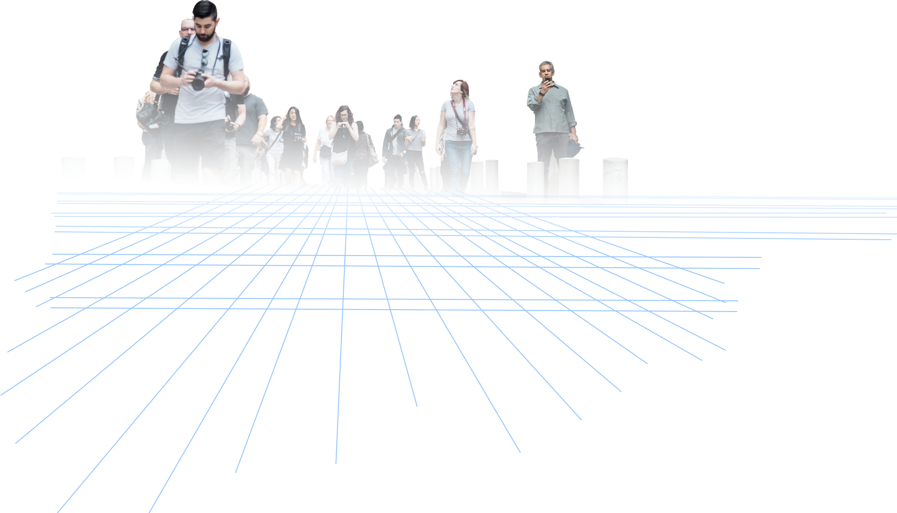
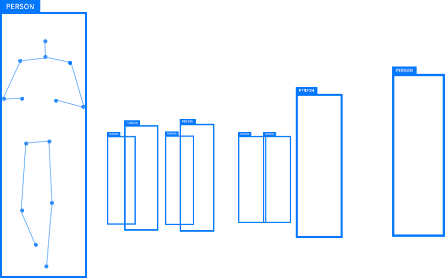
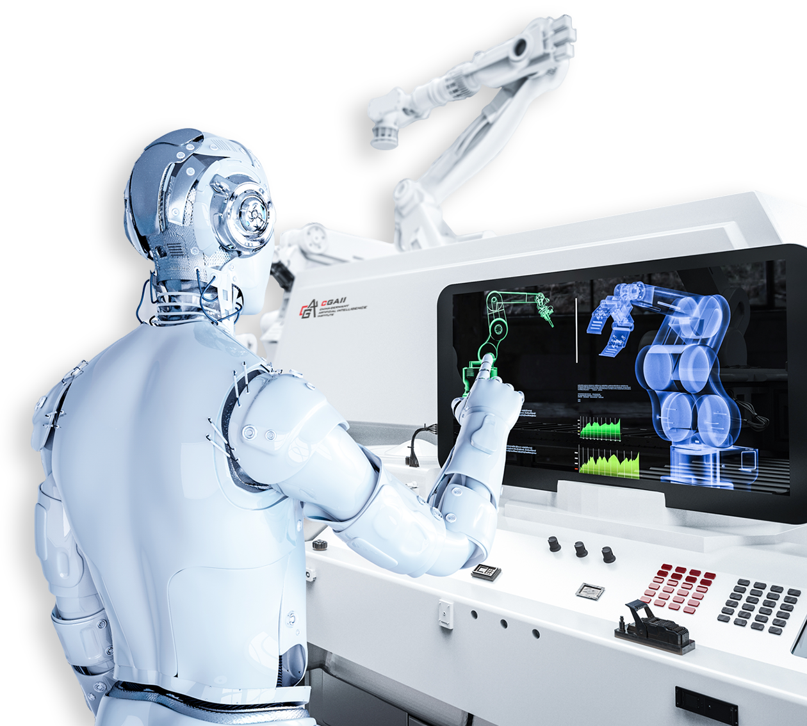
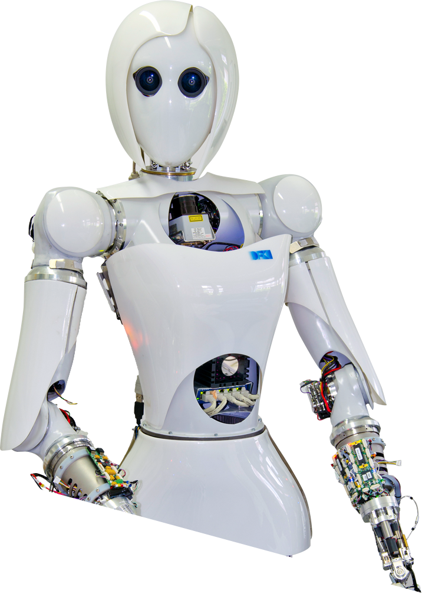
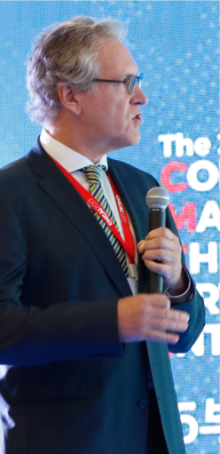
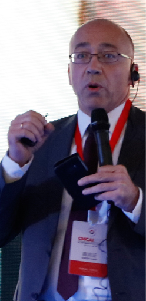
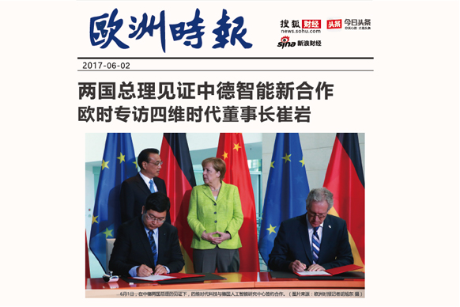

德国人工智能研究中心（DFKI）创立于1988年，是德国顶级的人工智能研究机构，也是目前世界上最大的非营利性人工智能研究机构，其股东为包括Google、Intel、微软、宝马、SAP、Airbus在内的全球顶级科技企业。德国人工智能研究中心CEO⸺沃夫冈·瓦尔斯特尔（Wolfgang Wahlster）教授是德国总理默克尔的科技顾问，也是“工业4. 0”构想发起者之一。中心旗下大约有900名科学家、研究人员及工程师，其中包括德国国家科学院、欧洲科学院、瑞士皇家科学院、德国自然与文学科学院、德国自然与工程科学院、柏林勃兰登堡自然与人类学科学院等知名科学院的院士。
研究领域
高精度高自动化的三维数字化技术
该技术主要用于工业产品的三维自动化检测、以及工业产品、文化遗产、建筑空间等产品的高精度三维数字化。
人体识别跟踪
人体自动识别及跟踪技术，主要用于安防监控、灾害预警、医疗康复训练、三维人体跟踪及可穿戴设备。


智能图像识别
智能图像三维数字化识别技术，可以广泛用于自动化生产车间、智能机器手臂及自动化监控。

机器人视觉
智能行走类机器人视觉系统开发，为未来的服务型机器人提供智能判断和主动学习的视觉输入与反馈系统。
合作伙伴


(Photo @DFKI)
四维时代（4DAGE）致力于人工智能三维数字化技术的理论研究与应用，以实现“数字万物”为愿景，让数字化飞入寻常百姓家。2017年6月，四维时代（4DAGE）与德国人工智能研究中心（DFKI），在中德两国总理见证下正式签订《中德人工智能研究院项目》，并成立中德人工智能研究院。基于雄厚的技术背景，四维时代（4DAGE）推出的解决方案已经广泛应用于各领域，包括数字工业、数字文博、数字生活等，并推出包括四维看看（4DKanKan）、四维模库（4DModel）等平台产品。
运用人工智能三维数字化技术，四维时代自主研发全球首款消费级3D相机——四维看看。发挥易操作、自动化、高精度的独有技术优势，应用于文博、地产、电商、餐饮、家居等领域，为传统行业赋能，加速催生传统领域的新面貌。
GraphicsMedia是一个非营利性的国际组织，专注于计算机图形学、多媒体技术及可视化交互数字媒体和3D视频技术等领域的研究开发。组织成员均为以应用研究为重点的独立国际机构，广泛分布于世界各地，如德国、西班牙、意大利、葡萄牙。
合作专家
-
Didier Stricker
Deutsches
Forschungszentrum für
Künstliche Intelligenz@
GraphicsMedia.net
-
Eduardo Pinto
Centro de Computaçao
Grafica @
GraphicsMedia.net
-
Jorge Posada
Vicomtech @
GraphicsMedia.net
-
Peter Eisert
Fraunhofer Heinrich
Hertz Institut @
GraphicsMedia.net
-
Ivan Vallarino Jr.
MIVTech @
GraphicsMedia.net
(Photo @graphicsmedia.net)
中德人工智能大会
深度四维
碰撞交锋
2016年
第一届中德人工智能大会
大会回顾
第一届大会主要围绕“虚拟·智能·变革”主题，邀请海内外智能制造和数字文博领域顶尖人才等共计300余人，共聚一堂为人工智能谋计献策。这是一次国际间的深度思维碰撞交锋，多方共同见证了中德人工智能研究院成立。
顶级学术
交流盛宴



2017年
2017年
第二届中德人工智能大会
大会回顾
第二届大会盛邀国内外业界精英，多位重量级行业专家组成的德国专家团队和中方专家团队竞相争锋。同时设有文化科技论坛、中德科技企业路演分会场等平行分论坛，会议规模达到500人以上。这是一次顶级学术交流盛宴，推进中国从“制造大国”向“智造大国”跨越。
同心协力
合作共赢
2018年
第三届中德人工智能大会
大会回顾
第三届中德人工智能大会吸引超过1300名中德专家及从业者，签署完成6项战略合作协议并发起人工智能行业联盟，为中德科研交流与产业落地发挥重要平台作用。大会目前已成为全球规模最大的中德人工智能学术交流及产业盛会。
消息资讯


2015年10月19号，在国务院“双创周”路演活动中，珠海市创新型企业四维时代网络科技公司创始人崔岩博士参与上述活动。
珠海四维时代亮相国务院“双创周”路演
2017年6月1号，在中德两国总理的见证下，双方签署多项合作备忘录。签约现场，一家年轻的企业引起了记者注意，其所涉及的人工智能合作也是两国创新合作最火热的议题之一，签约仪式后，记者对这家企业进行了访问。
欧洲时报专访董事长崔岩
更多资讯
关于我们
中德人工智能研究院
2017年6月，在中德两国总理见证下，四维时代（4DAGE）与德国人工智能研究中心（DFKI）正式签订合作协议，计划共同支持建设中德人工智能研究院。2018年11月15日，中德人工智能研究院加入欧洲图像算法联盟，成为这一人工智能视觉联盟中的唯一亚洲成员。
中德人工智能研究院现正组建由德国人工智能领域超级教授和专家学者以及国内人工智能院士和专家组成的学术委员会，约定每年定期派遣20人次的高级研究人员在中德人工智能研究院工作，与国内外10余所高校建立合作关系。每年组织开展500人以上规模人工智能大会1次和专业技术交流会10余次，欧洲及国内人工智能领域合作伙伴80余家，累计贡献知识产权50余件，固定博士及高级研发人员100余人及研发设备价值约2500万。
中德人工智能研究院聚焦于人工智能领域，尤其是计算机视觉领域的技术转化与行业应用，以人工智能视觉技术为依托，工业视觉技术为主导，带动工业检测技术、传感技术、动力系统、控制系统、机械臂操作引导以及精准定位与捕捉等技术的自主创造与开发，实现工业4.0和智能化工业体系的产业升级。
加入我们